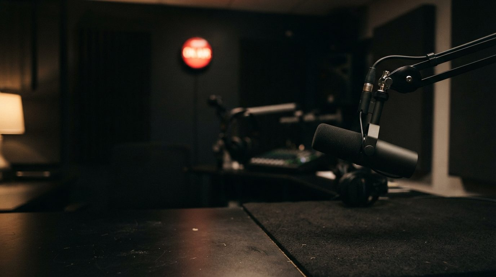

Para tener a mano en todas las sesiones
El curso completo
El hilo de las tres sesiones, con tutoriales de Audacity y Spreaker, programas de ejemplo y el taller práctico.

Todo el material del curso, sesión a sesión, para poner en marcha la radio de tu centro.
El hilo de las tres sesiones, con tutoriales de Audacity y Spreaker, programas de ejemplo y el taller práctico.
Para qué sirve una radio en el centro, qué necesitamos, cómo montar el estudio y cómo preparar el guion y la escaleta.
Herramientas de inteligencia artificial para guiones, logos y sintonías, y primeros pasos para grabar y editar con Audacity.
Protección de datos al publicar, la mesa de mezclas Soundcraft EFX8, el montaje de un programa completo y su publicación.
Plantillas de guion en español para el programa de radio de tu centro. Gratis, sin registro y sin inteligencia artificial.
Abrir Dale al Rec → Funciona en el navegador del ordenador, la tableta o el móvil.